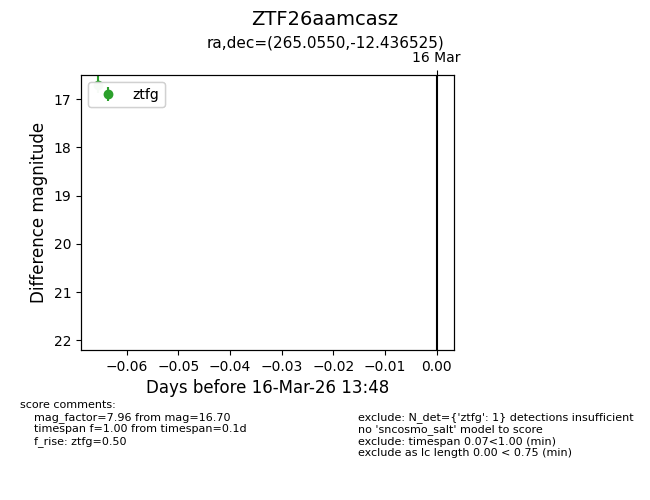
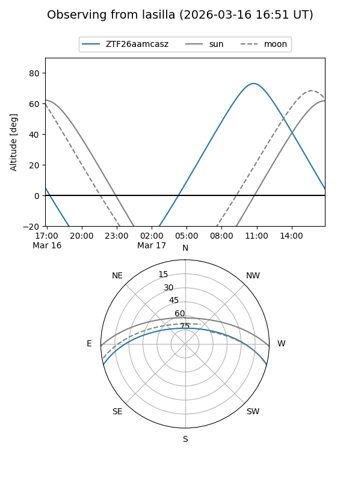
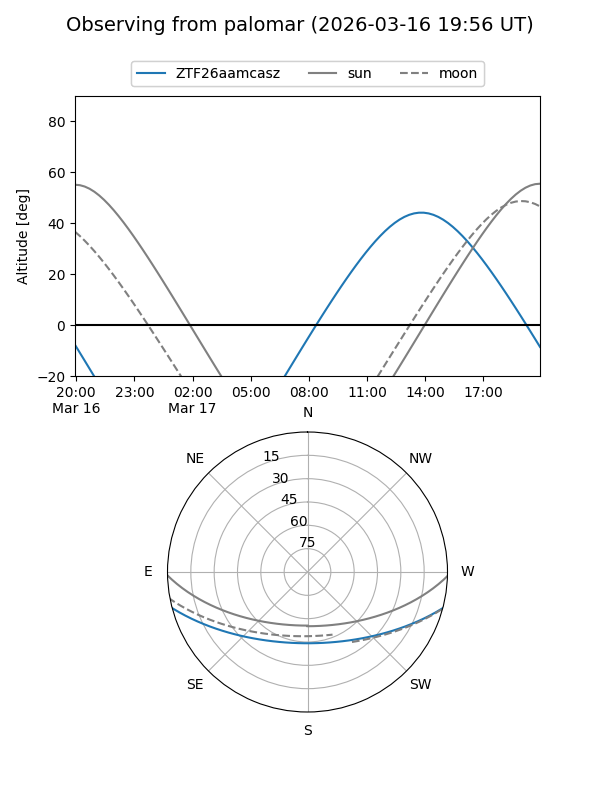

ZTF26aamcasz
Target ZTF26aamcasz at 2026-03-16 13:50
Aliases and brokers:
FINK: link
Lasair: link
ALeRCE: link
alt names
ZTF26aamcasz (ztf,fink_ztf)
Coordinates:
equatorial (ra, dec) = 265.0550,-12.43652
equatorial (HMS+DMS) = 17:40:13.21,-12:26:11.49
galactic (l, b) = (13.5101,+9.64514)
Flags:
Photometry:
last ztfg=16.70
1 ztfg detections
Lightcurve

Visibility


Additional plots